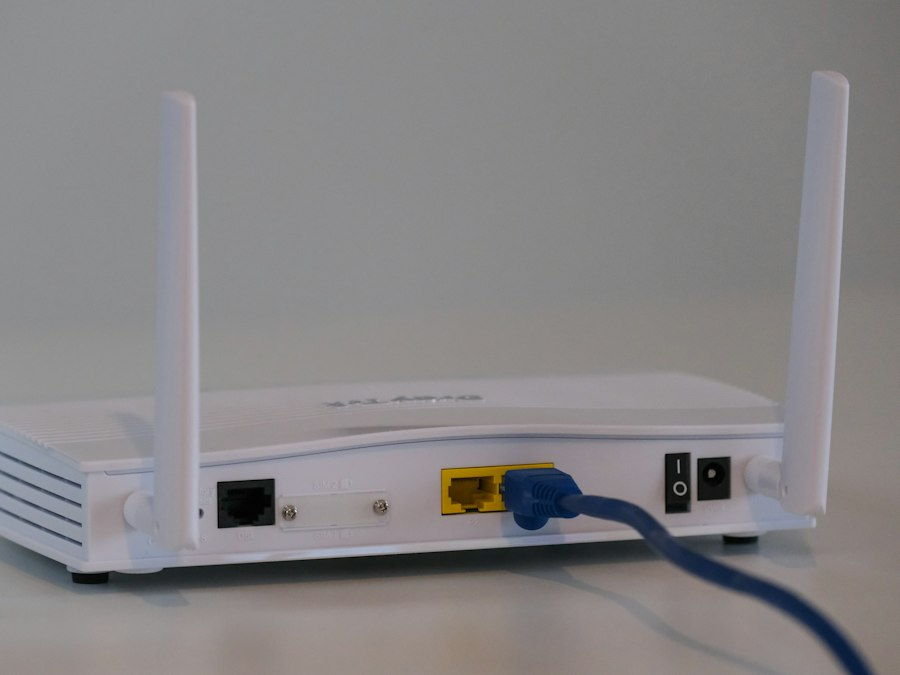
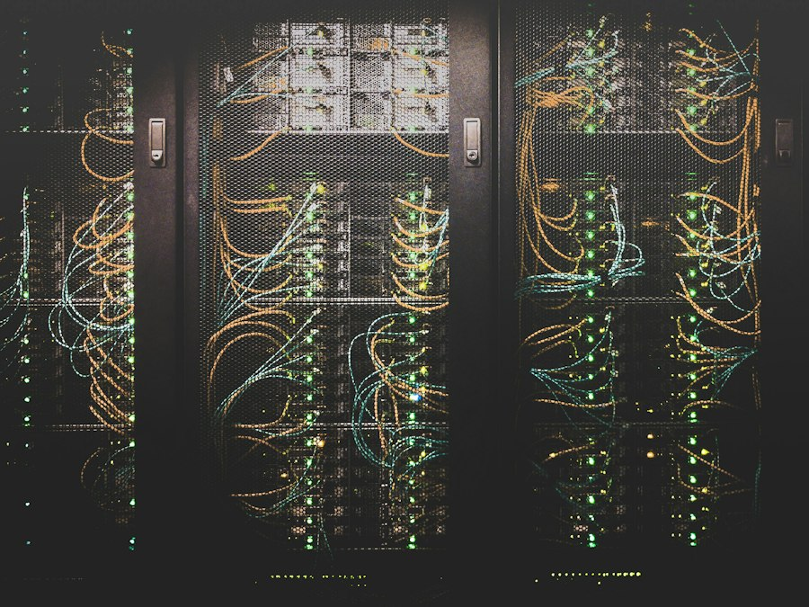

“Uyim, doʻkonim xavfsiz boʻlsin”
Kamera oʻrnatamiz va telefoningizga ulaymiz — istalgan joydan koʻrasiz.
150 000 soʻmdan
Kamera haqida
Besh usta, bitta jamoa. Uy, doʻkon yoki ofisingiz uchun hammasini bir joydan buyurtma qiling.
15 daqiqada javob beramiz · Koʻrik bepul
Muammongizni tanlang — qolganini oʻzimiz hal qilamiz.
Kamera oʻrnatamiz va telefoningizga ulaymiz — istalgan joydan koʻrasiz.
Wi-Fi’ni butun uy yoki ofisga yetkazamiz, internet uzilmaydigan qilamiz.
Reels, reklama va tadbir videolarini montaj qilib, rangini chiroyli qilamiz.
Buyurtma qabul qiladigan sayt yoki Telegram bot qilib beramiz.
AI yordamchi va avtomatlashtirish — mijozga 24/7 javob, hisobotlar oʻzi tayyor.
Buxorodagi uy, doʻkon va ofislarda bajargan ishlarimizdan namunalar.

Namuna
Namuna[Bu yerga mijozning haqiqiy izohi qoʻyiladi: qanday muammo boʻlgan, nima qilindi va natija qanday boʻldi.]
[Bu yerga mijozning haqiqiy izohi qoʻyiladi: qanday muammo boʻlgan, nima qilindi va natija qanday boʻldi.]
[Bu yerga mijozning haqiqiy izohi qoʻyiladi: qanday muammo boʻlgan, nima qilindi va natija qanday boʻldi.]
Bir nechta xizmat bitta buyurtmada — alohida olgandan arzonroq.
Kichik doʻkon yoki dorixona uchun.
6 oy bepul xizmat kafolati
Yangi yoki taʼmirdan chiqqan ofis uchun.
6 oy bepul xizmat kafolati
Mehmonxona va mehmon uylari uchun.
6 oy bepul xizmat kafolati
Set narxiga ish haqi kiradi. Uskunalarni (kamera, registrator, router, kabel) oʻzingiz olasiz yoki biz bozor narxida olib beramiz — summa joy va modelga qarab oʻzgaradi.
Uch oddiy qadam — qaysi xizmat boʻlishidan qatʼi nazar.
Muammoni Telegramda yozing yoki qoʻngʻiroq qiling.
Usta vazifani koʻrib, narx va muddatni oldindan aytadi.
Ishni topshiramiz va qanday ishlatishni tushuntiramiz.
Har bir yoʻnalishga oʻz ustasi javob beradi.
Saytingiz telefonda ham tez va tushunarli ishlashi — mening ishim.
Internet uzilsa — ish toʻxtaydi. Men buning oldini olaman.
Oddiy videoni ham koʻrishga arziydigan qilib beraman.
Uyingiz va doʻkoningiz kechasi ham nazoratda boʻladi.
Takroriy ishni dasturga topshiring — vaqtingiz asosiy ishga qolsin.
Kerakli xizmatlarni tanlang — taxminiy narx shu zahoti hisoblanadi.
Qisqa javoblar. Javob topmasangiz — yozing.
Odatda uy uchun 2–4 ta (darvoza, hovli, kirish eshigi), kichik doʻkon uchun 4–6 ta (kirish, kassa, zal, omborxona). Aniq sonni joyni koʻrib aytamiz.
IP kamera tasviri tiniqroq, bitta kabel orqali ham quvvat, ham signal oladi (PoE) va keyin kengaytirish oson. Analog (AHD/TVI) arzonroq. Yangi tizim uchun koʻpincha IP tavsiya qilamiz.
Ha. Registrator internetga ulansa, telefondagi ilova orqali istalgan joydan jonli tasvir va yozuvlarni koʻrasiz. Ilovani oʻrnatib, sozlab beramiz.
Disk hajmi va kameralar soniga bogʻliq. Masalan, 4 ta 2 MP kamera va 1 TB disk — taxminan 2 hafta. Disk toʻlsa, eng eski yozuv avtomatik oʻchib, yangisi yoziladi.
Qurilmani tashlab yubormang — parolni tiklash yoki zavod sozlamalariga qaytarish mumkin. Koʻp hollarda eski yozuvlar saqlanib qoladi.
Ha. Infraqizil yoritgichli kameralar tunda 20–30 metrgacha oq-qora tasvir beradi. Tunda ham rangli koʻrsatadigan modellar ham bor.
Koʻp uchraydigan sabablar: router uyning bir chetida turibdi, qalin devorlar, ulangan qurilmalar koʻp yoki router eskirgan. Koʻpincha routerni toʻgʻri joyga qoʻyish va qayta sozlashning oʻzi yordam beradi.
Kuchaytirgich (repiter) oʻrniga mesh tizim yoki kabel bilan ulangan qoʻshimcha nuqta (access point) qoʻyish yaxshiroq — xonadan xonaga oʻtganda internet uzilmaydi.
Bu professional router: ikki provayderni ulash, mehmonlar uchun alohida Wi-Fi, tezlikni cheklash, filiallar orasida VPN. Ofis, doʻkon va mehmonxonaga juda mos, oddiy uyga shart emas.
Landing (bir sahifali sayt) — 5–10 kun, bir necha boʻlimli korporativ sayt — 2–4 hafta. Muddat matn va rasmlar qanchalik tez berilishiga ham bogʻliq.
Buyurtma va arizalarni qabul qiladi, mahsulotlar katalogini koʻrsatadi, toʻlov qabul qiladi, mijozlarga xabar yuboradi va ularning roʻyxatini yuritadi — hammasi avtomatik.
Ha, domen (masalan, nomingiz.uz) va hosting yiliga bir marta alohida toʻlanadi. Ularni tanlash va ulashda yordam beramiz.
Oddiy bot faqat tugmalar bilan ishlaydi. AI bot esa mijoz oʻz soʻzi bilan yozgan savolni tushunadi va sizning narx va xizmatlaringiz haqidagi maʼlumot asosida oʻzbek yoki rus tilida javob beradi.
Bot faqat siz bergan maʼlumotlar asosida javob beradigan qilib sozlanadi, bilmagan savolni esa xodimingizga oʻtkazadi. Ishga tushirishdan oldin birga sinab koʻramiz.
Ha, AI xizmatidan foydalanish uchun oylik kichik toʻlov boʻladi — u xabarlar soniga bogʻliq. Uni oldindan hisoblab aytamiz.
Har kuni takrorlanadigan ishlarni: buyurtmalarni jadvalga yozish, hisobot tayyorlash, mijozlarga eslatma yuborish, saytdan kelgan soʻrovlarni Telegramga uzatish.
Reels yoki qisqa reklama — 1–2 kun, toʻy va tadbir videolari — 1–2 hafta. Shoshilinch ish ham boʻladi, oldindan kelishamiz.
Barcha xom videolar, logotip va musiqa (boʻlsa), va sizga yoqqan namuna video — shunda natija kutganingizdek chiqadi.
Bu videoning rangini professional tuzatish: kadrlar bir xil rangda, terining rangi tabiiy, umumiy kayfiyat chiroyli chiqadi. Oddiy telefonda olingan video ham ancha qimmat koʻrinadi.
Koʻrik va maslahat bepul.
Raqamingizni qoldiring — oʻzimiz qoʻngʻiroq qilamiz.